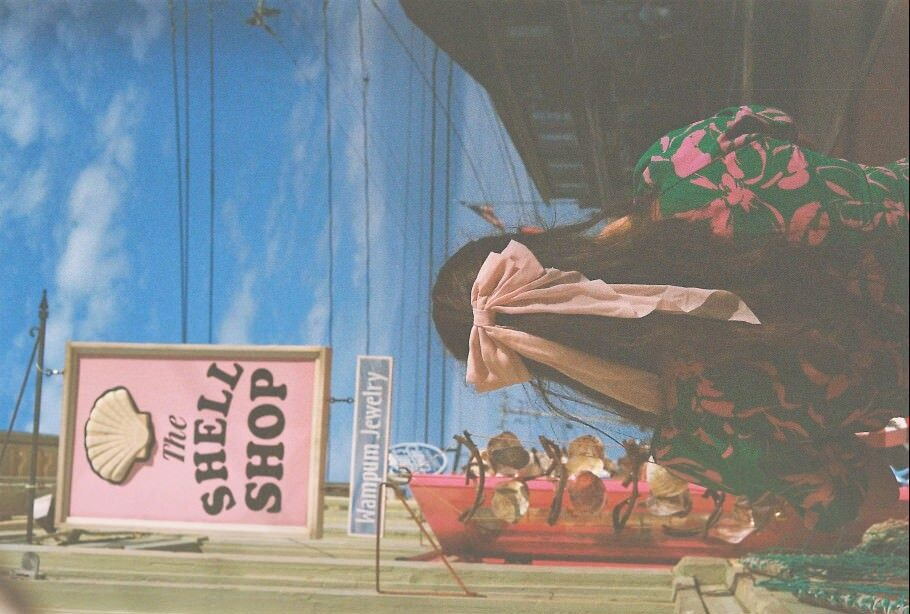

About Tatiana Estrina

I’m a designer creative coder ballroom dancer ceramicist nail artist problem solver urban sketcher reader cat mom .
Currently an Industrial Designer at
Amazon Robotics . Previously, I was a design intern at
Tesla
and architectural designer at
PARTISANS.
Studied architecture at
Toronto Metropolitan University
before crossing the border to study Architecture and Computer Science at
MIT. My work now lives at the intersection of spatial design, human behavior, and emerging
tools— especially wherever hardware, software, and bodies collide.
Connect with me on
Instagram
and
LinkedIn
or download my
CV
or Portfolio.